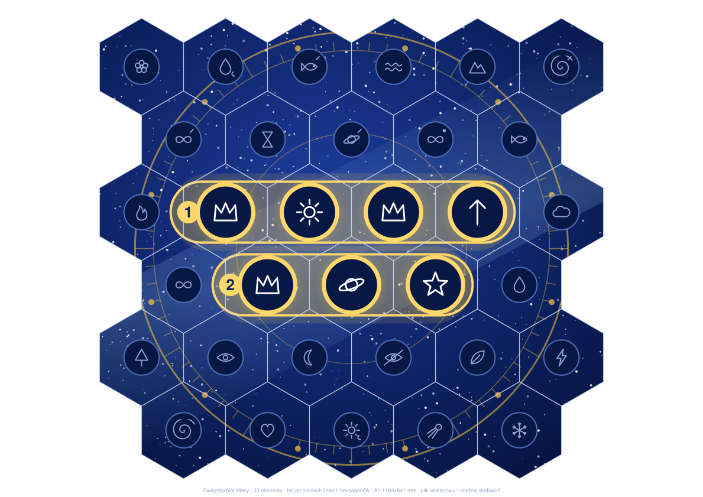
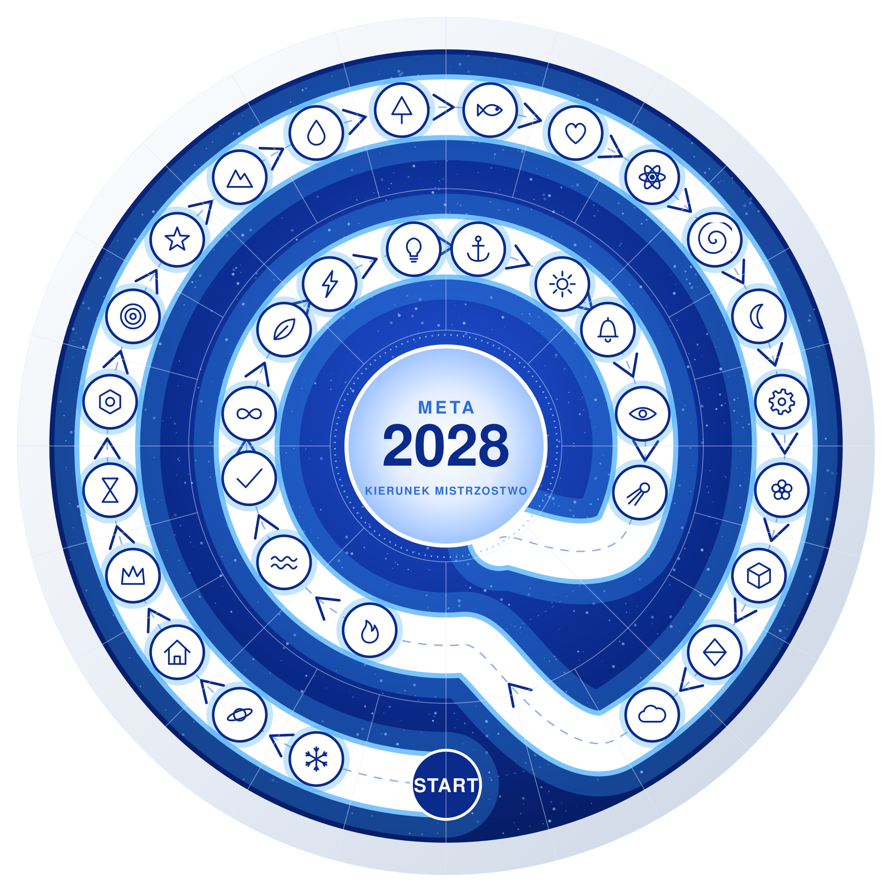

Uczestnik skanuje kod, odpowiada na 5 pytań (3 × ABCD, 2 × układanie kafelków) i naciska SPRAWDŹ.
Błędne lub puste pytania świecą na czerwono z prośbą o poprawkę.
Komplet dobrych odpowiedzi odsłania cyfrę kodu: 2
Każde pytanie ma przycisk „↺ Wyczyść”.
Kod QR otwiera quiz z wyczyszczonymi odpowiedziami (adres z ?reset).
Pytania są przykładowe (2 + 2 itd.). Treść, cyfrę i teksty zmienia się w bloku CONFIG na górze pliku index.html – wystarczy napisać do Claude, co zmienić.
Zadanie 2A · Gwiazdozbiór Mocy (szyfr)

Jak to działa
33 zespoły = 33 sześciokąty (rzędy 6-5-6-5-6-5). Każdy kawałek ma jeden symbol.
Alfabet szyfru: 33 symbole – 32 polskie litery + „!”. Polskie znaki to symbol bazowy z ogonkiem, kreską, kropką lub przekreśleniem.
Każdy zespół dostaje 1 kawałek + 1 kartę legendy (symbol = litera). Nikt nie ma karty do własnego symbolu.
Hasło stoi na dwóch złotych wstęgach w środku mapy. Wstęgi przechodzą przez kilka kawałków, więc widać je dopiero po złożeniu.
Pozostałe 26 symboli jest małych i przygaszonych – to tło.
Rozwiązanie
Wstęga
Symbole
Słowo
1
korona · słońce · korona · strzała
MAMY
2
korona · planeta · gwiazda
MOC
Hasło: MAMY MOC
Przebieg gry
Każdy zespół otwiera kopertę: sześciokąt + karta „Fragment klucza”.
Cała sala składa mapę w jednym miejscu (podłoga, stół, ściana). Pomaga koło zodiaku, Droga Mleczna i złote wstęgi.
Po złożeniu widać 7 dużych symboli: 4 na wstędze 1, 3 na wstędze 2.
Sala szuka kart: „Kto ma koronę? Kto ma słońce?”. Potrzebne są karty M, A, Y, O, C – ma je 5 z 33 zespołów.
Litery podpisuje się pod symbolami i czyta od lewej do prawej: MAMY · MOC.
Finał: wszyscy razem wołają hasło.
Druk i cięcie
Plansza: A0 na sztywnej płycie (kapa, forex, PCV 3 mm) lub kartonie 350–400 g z laminatem. Drukarnia może wyciąć po liniach heksagonów ploterem.
Cięcie samemu: same proste cięcia nożykiem po linijce. Przed cięciem ponumeruj odwrót według mapy cięcia.
Koperta zespołu X = kawałek nr X + karta legendy #X (tabela w pełnej instrukcji).
Zadanie 2B · Road to 2028 (tor)

Jak to działa
W boxie zespół znajduje kawałek okrągłej mozaiki (fragment instrukcji) i segment toru z symbolem.
Mozaika: 33 elementy – 24 w pierścieniu zewnętrznym, 8 w środkowym, środek „META 2028”. Kształt nawiązuje do wieczka kremu.
Po złożeniu widać drogę od START do META 2028 z 33 symbolami i strzałkami kierunku. Na mozaice nie ma numerów.
Zespół szuka symbolu ze swojego segmentu i liczy, którym jest od START. To jego miejsce w torze. Symbol nigdy nie leży na własnym kawałku zespołu.
Segmenty łączą się w kolejności 1 → 33 od startu do sceny; naklejka „WEJŚCIE ━▶ WYJŚCIE” pokazuje kierunek jazdy kuli.